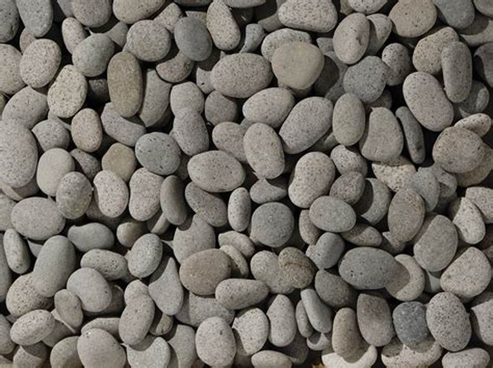
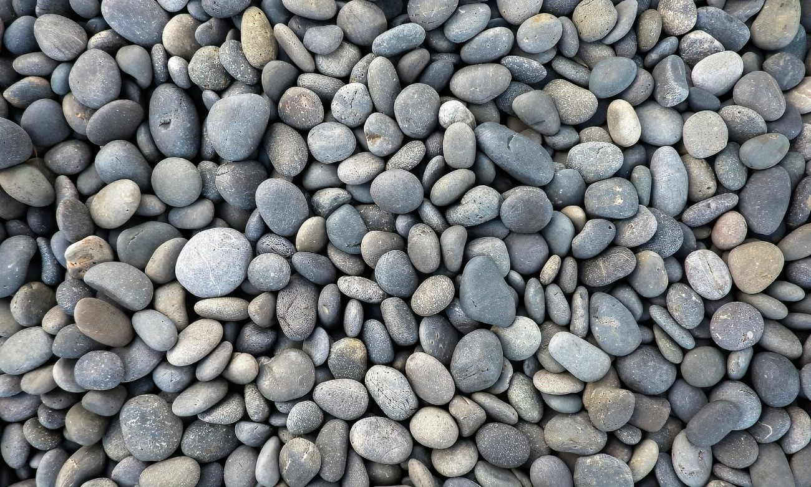

Calibre versátil

Calibre compactoLa apariencia, tono y forma pueden variar ligeramente por tratarse de un material natural.
Piedra natural de tamaño compacto, ideal para detalles decorativos, macetas, senderos y acabados que requieren una textura uniforme.
El precio mostrado corresponde a la configuración seleccionada. Para cantidades mayores, transporte o condiciones especiales, solicita una cotización.
Una piedra versátil para incorporar textura natural en distintos tipos de espacios y proyectos.
Indícanos el producto, cantidad aproximada y lugar de entrega. Evaluamos cada solicitud según disponibilidad y características del pedido.